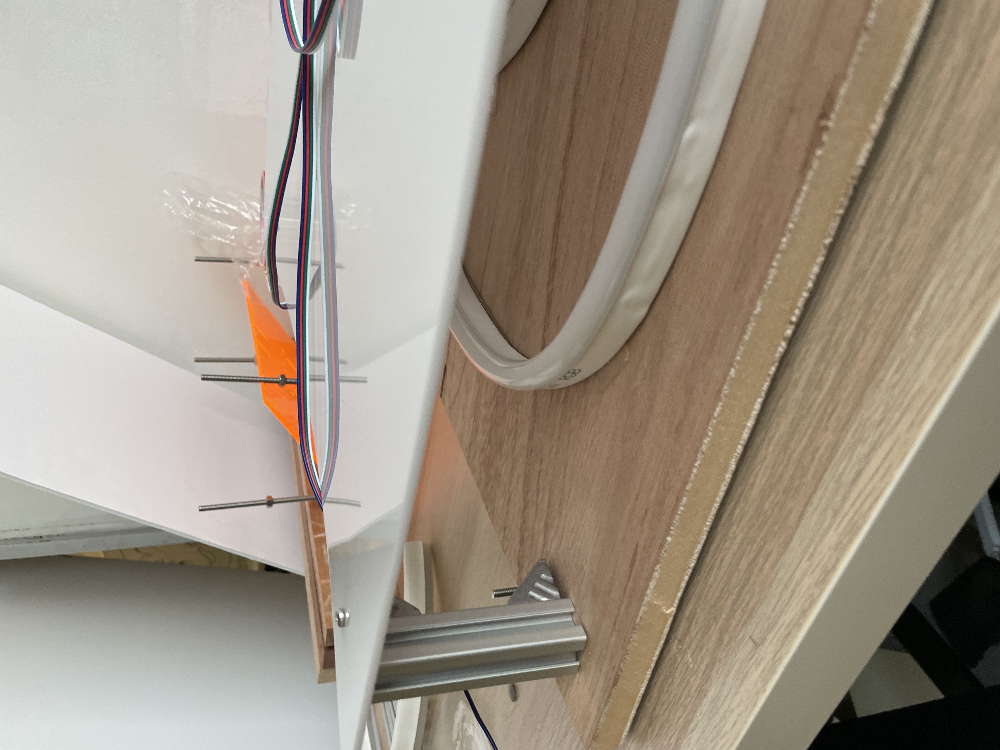
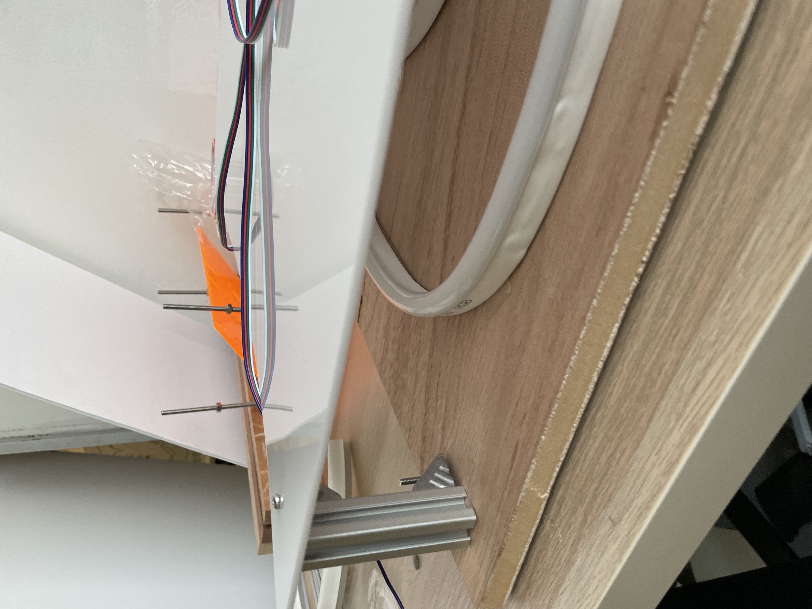

// Semester Two Week Eleven: 21.03.22 - 25.03.22
Graduation Project:
// 21.03.22 - Experimentation with some Math to make for Smoother Transitions.
// 24.03.22 - 25.03.22 - Learning Keyshot 10 to set the Lighting for 3D Rendered Environments.
// 23.03.22 - 25.03.22 - Building Open Studio Prototype.
// 25.03.22 - Preparing Gifs for Open Studio.
// 24.03.22 - 25.03.22 - Learning Keyshot 10 to set the Lighting for 3D Rendered Environments.
Since the open studio set up was not the full experience, I wanted to do a quick render so that people could see what the idea was. I talked to Shaiful and he suggested that since I had rendered out the 3D Model of the space in Rhino I could try using Rhino to do the lighting effect. I looked up some tutorials on youtube and between the tutorials and consulting the product design guys on how to use keyshot I managed to get out a really quick and dirty render. It's not the best but it gets the idea across.
It was really fun learning a new software and I think it's a really important tool especially if I want to do more installation work in the future. It's for sure something that I would want to learn more in the future together with Rhino.
// 23.03.22 - 25.03.22 - Building Open Studio Prototype.
One key thing to takeaway from building the open studio prototype is to not make the mistakes of the previous iteration. The previous iteration had badly soldered connectors and I didnt hot glue them to seal the connector points. I will not make that mistake again.
But other than that the construction of the open studio prototype was pretty smooth, I laser cut the holes for the acrylic and for the wood, Since i was using a 15mm blockboard I couldn't laser cut but i engraved the points on the wood and went to the workshop to drill them.
 

// End of this Section.
// 25.03.22 - Preparing Gifs for Open Studio.


// End of the Week